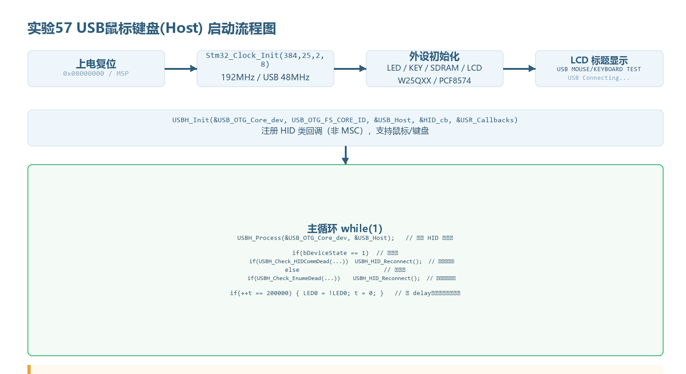
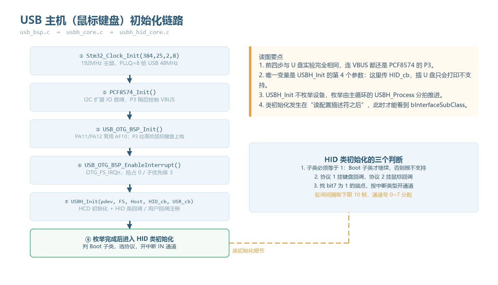
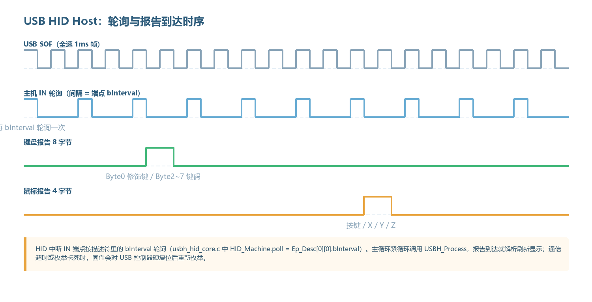
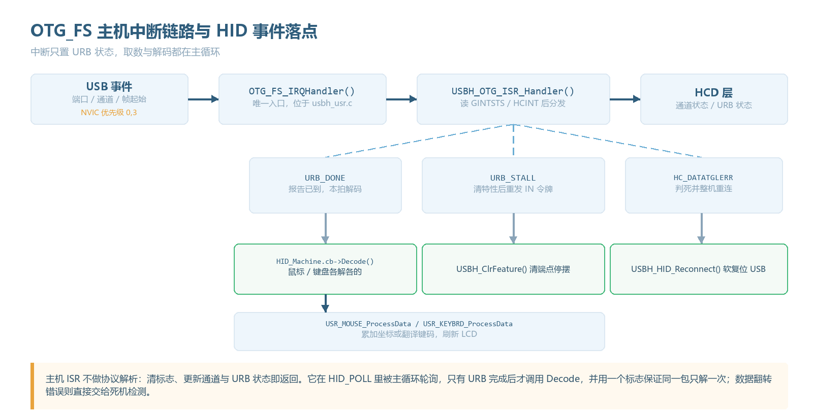
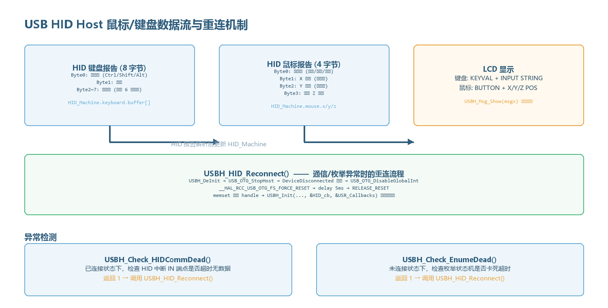

01 实验目标与硬件资源
STM32F429 做 USB 主机，识别 Boot 协议鼠标/键盘，把按键与坐标画到 LCD
本实验仍以 OTG_FS 作主机，但类回调从 USBH_MSC_cb 换成 HID_cb。插入鼠标时，主机周期读取中断端点的 4 字节 Boot 报告，累计 X/Y/Z 并在 LCD 上显示按键状态与坐标；插入键盘时读取 8 字节报告，把键码翻译成 ASCII，显示键值与输入字符串。
与 U 盘实验最大的差别在于数据节奏：U 盘是“有命令才搬数据”的批量传输，鼠标键盘是“设备主动产生、主机定时来取”的中断传输。主机必须按端点描述符里的 bInterval 周期性发 IN 令牌，取晚了设备端会覆盖旧报告——所以 HID 的轮询节奏直接决定“手感”。
| 对比项 | 实验57 鼠标键盘（本页） | 实验56 U 盘 | 实验55 虚拟串口 |
|---|---|---|---|
| 角色 | Host | Host | Device |
| 类 | HID，class 0x03 / subclass 0x01 / protocol 0x01 或 0x02 | MSC 0x08 / 0x50 | CDC 0x02 |
| 端点类型 | 中断 IN | 批量 IN + 批量 OUT | 批量 IN + 批量 OUT |
| 数据产生方 | 设备（按键/移动） | 主机发起读扇区 | PC 下发 |
| 关键参数 | bInterval，下限 HID_MIN_POLL=10 | 扇区 512B | 环形缓冲 2048B |
引脚与板级资源
| 资源 | 引脚 / 参数 | 说明 |
|---|---|---|
| OTG_FS_DM / DP | PA11 / PA12，AF10 | 主机差分收发 |
| USB 供电 | PCF8574 P3（USB_PWR_IO=3） | 鼠标键盘同样需要 5V，缺电则无任何反应 |
| USB 时钟 | 48MHz，PLLQ=8 | 192MHz 主频下 384/8 |
| 按键 | KEY0 / KEY1 / KEY2，外加 WK_UP | 本实验只做 KEY_Init，不参与 HID 逻辑 |
| 显示 | LCD，逐行刷新 | 鼠标显示 BUTTON / X / Y / Z；键盘显示 KEYVAL / 输入串 |
| 调试串口 | USART1，115200-8-N-1 | 打印 VID/PID、厂商、产品、枚举完成 |
| 指示 | DS0 | 主循环计满 200000 次翻转一次 |
HID class 0x03
Boot subclass 0x01
protocol 1=键盘 / 2=鼠标
中断 IN，poll ≥10ms
鼠标 4B / 键盘 8B
PCF8574 P3 → VBUS
本工程的 HID 类只接受 Boot 子类（
bInterfaceSubClass == 1）。多数 USB 鼠标键盘上电默认就是 Boot 子类，所以能直接用；遇到“游戏鼠标 + 自定义驱动盘”的复合设备，会被 DeviceNotSupported() 拒绝。02 目录与文件分工
HID 类目录三个文件各管一段：核心状态机、鼠标解码、键盘解码
| 文件 | 职责 | 本页关注点 |
|---|---|---|
USER/main.c | 初始化、USBH_Init、主循环、死机重连 | USBH_Msg_Show、USBH_HID_Reconnect |
USB/USB_APP/usb_bsp.c | OTG 引脚、VBUS、NVIC | 与 U 盘实验相同，P3 拉高 |
USB/USB_APP/usbh_usr.c | 用户回调、鼠标/键盘数据显示、死机检测 | USR_MOUSE_ProcessData、tbuf |
USB/USB_APP/usbh_conf.h | 主机库裁剪 | 端点数量、数据缓冲 |
Class/HID/src/usbh_hid_core.c | 类初始化、类请求、数据状态机 | HID_cb 四个成员 |
Class/HID/src/usbh_hid_mouse.c | 鼠标 Boot 报告解码 | 4/5/6/8 字节长度分支 |
Class/HID/src/usbh_hid_keybd.c | 键盘 Boot 报告解码与 ASCII 映射 | Shift、去重、keys_new |
Core/src/usbh_core.c | 主机与枚举状态机 | 与 U 盘实验共用 |
Core/src/usbh_stdreq.c | 标准请求 | 读描述符、设配置 |
CORE/startup_stm32f429xx.s | 栈堆、向量表 | OTG_FS_IRQHandler 弱符号 |
读 HID 代码的顺序建议：
USBH_HID_InterfaceInit（选鼠标还是键盘）→ USBH_HID_ClassRequest（取描述符、设 Boot 协议）→ USBH_HID_Handle（怎么定时取数）→ MOUSE_Decode / KEYBRD_Decode（字节怎么解释）。03 启动流程总览
与 U 盘实验同一条初始化主干，差别只在最后注册的类回调

int main(void)
{
u32 t;
Stm32_Clock_Init(384,25,2,8); // 设置时钟,192Mhz；USB 48MHz
delay_init(192); // 初始化延时函数
uart_init(115200); // 初始化USART
LED_Init(); // 初始化LED
KEY_Init(); // 初始化按键
SDRAM_Init(); // SDRAM初始化（LCD 显存）
LCD_Init(); // LCD初始化
W25QXX_Init(); // 初始化W25Q256（字库）
PCF8574_Init(); // 初始化PCF8574，P3 稍后给 USB 供电
POINT_COLOR=RED;
LCD_ShowString(30,50,200,16,16,"Apollo STM32F4/F7");
LCD_ShowString(30,70,200,16,16,"USB MOUSE/KEYBOARD TEST");
LCD_ShowString(30,90,200,16,16,"ATOM@ALIENTEK");
LCD_ShowString(30,110,200,16,16,"2016/2/20");
LCD_ShowString(30,130,200,16,16,"USB Connecting...");
//初始化USB主机：注意类回调是 HID_cb，不是 MSC_cb
USBH_Init(&USB_OTG_Core_dev,USB_OTG_FS_CORE_ID,&USB_Host,&HID_cb,&USR_Callbacks);
while(1)
{
USBH_Process(&USB_OTG_Core_dev, &USB_Host);// 推进一步主机状态机
if(bDeviceState==1)// 连接建立了
{
if(USBH_Check_HIDCommDead(&USB_OTG_Core_dev,&HID_Machine))// 通信是否还正常?
{
USBH_HID_Reconnect();// 重连
}
}else// 连接未建立的时候,检测
{
if(USBH_Check_EnumeDead(&USB_Host))// 枚举是否死机了?
{
USBH_HID_Reconnect();// 重连
}
}
t++;
if(t==200000)
{
LED0=!LED0;// 心跳灯
t=0;
}
}
}
关键逻辑说明
- 宏包是全局的：
USBH_Msg_Show在main.c里定义，usbh_usr.c通过extern调用，用于在“无连接/键盘/鼠标/不支持”四种界面间切换。 - 没有
delay_ms：主循环是纯轮询，USBH_Process内部靠帧计数控制节奏；t==200000的心跳只是为了让 DS0 闪得慢一些。 - 两种死机检测：连接未建立时查枚举是否卡在
HOST_CTRL_XFER + ENUM_IDLE；连接建立后查 IN 通道是否进了HC_DATATGLERR。任一命中就整机重连。 - 重连是“软复位 USB”：
USBH_HID_Reconnect先USBH_DeInit、USB_OTG_StopHost、关全局中断，再对 OTG_FS 做一次 RCC 强制复位，最后重新USBH_Init。 - 类回调决定“插鼠标还是插 U 盘”：
HID_cb在USBH_Init时就固定下来，插 U 盘只会打印“MSC device is not supported.”，不会误当键盘。
04 启动文件与向量表
栈 1KB、堆 512B；键盘输入缓冲
tbuf[2017] 在 .bss，不占栈Stack_Size EQU 0x400; ; 1KB 栈 AREA STACK, NOINIT, READWRITE, ALIGN=3 Stack_Mem SPACE Stack_Size __initial_sp ; 向量表第 0 项：初始 MSP Heap_Size EQU 0x200; ; 512B 堆 Reset_Handler PROC EXPORT Reset_Handler [WEAK] IMPORT SystemInit IMPORT __main LDR R0, =SystemInit BLX R0 ; SystemInit：FPU / RCC / VTOR LDR R0, =__main BX R0 ; C 库启动 → main ENDP DCD OTG_FS_IRQHandler ; USB OTG FS EXPORT OTG_FS_IRQHandler [WEAK] ; usbh_usr.c 里的同名强符号覆盖它 OTG_FS_IRQHandler B .
关键逻辑说明
- 2017 字节的
tbuf是全局数组：它用于存键盘输入字符串，放在 .bss 段，链接时占内部 SRAM；如果误以为它在栈上，就会担心 1KB 栈不够——其实栈只承担函数局部变量。 - HID 回调链的栈深很小：
USBH_Process → HID_Handle → Decode → USR_*_ProcessData，最深路径里只有几十字节局部变量，1KB 足够。 - 弱符号覆盖机制：
usbh_usr.c定义了OTG_FS_IRQHandler，链接器用强符号替换 startup 里的死循环，因此不必改启动文件。 - 向量表在 Flash 起始：
VECT_TAB_OFFSET未改，SCB->VTOR = 0x08000000；若以后做 IAP，必须同步修改这个偏移，否则中断会跳错地址。
05 SystemInit 与 HAL_Init
FPU、RCC 复位、分组 2、1ms 时基，与其他实验完全一致
void SystemInit(void)
{
#if (__FPU_PRESENT == 1) && (__FPU_USED == 1)
SCB->CPACR |= ((3UL << 10*2)|(3UL << 11*2));/* 放开 CP10/CP11 */
#endif
RCC->CR |= (uint32_t)0x00000001; /* HSI 开 */
RCC->CFGR = 0x00000000; /* 时钟源回 HSI */
RCC->CR &= (uint32_t)0xFEF6FFFF; /* 关 HSEON/CSSON/PLLON */
RCC->PLLCFGR = 0x24003010; /* PLL 复位值 */
RCC->CR &= (uint32_t)0xFFFBFFFF; /* 清 HSEBYP */
RCC->CIR = 0x00000000; /* 关 RCC 中断 */
SCB->VTOR = FLASH_BASE | VECT_TAB_OFFSET;
}
HAL_StatusTypeDef HAL_Init(void)
{
__HAL_FLASH_INSTRUCTION_CACHE_ENABLE();
__HAL_FLASH_DATA_CACHE_ENABLE();
__HAL_FLASH_PREFETCH_BUFFER_ENABLE();
HAL_NVIC_SetPriorityGrouping(NVIC_PRIORITYGROUP_2);// 2 位抢占 + 2 位子优先级
HAL_InitTick(TICK_INT_PRIORITY); // 0x0F，1ms
HAL_MspInit();
return HAL_OK;
}
关键逻辑说明
- 分组 2 让 USB 抢占优先：
OTG_FS_IRQn配(0,3)，抢占级 0 高于串口与 SysTick，保证中断端点每 10ms 的 IN 事务不被拖后。 - Cache 打开不影响 USB：HID 的 IN 缓冲由 USB 内核 DMA 写入，库在读取前会保证一致性（
__align(4)的静态缓冲），不依赖 D-Cache 维护。 - 时基只服务 HAL：
HAL_Delay在本实验里几乎不用，真正的时间尺度来自 USB 帧计数与delay_ms。
06 时钟树与 SysTick 时基
192MHz + PLLQ=8；低速鼠标对时钟更敏感，时钟错会直接表现为“指针乱跳”
void Stm32_Clock_Init(u32 plln,u32 pllm,u32 pllp,u32 pllq)
{
RCC_OscInitTypeDef RCC_OscInitStructure;
RCC_ClkInitTypeDef RCC_ClkInitStructure;
__HAL_RCC_PWR_CLK_ENABLE();
__HAL_PWR_VOLTAGESCALING_CONFIG(PWR_REGULATOR_VOLTAGE_SCALE1);// Scale1
RCC_OscInitStructure.OscillatorType=RCC_OSCILLATORTYPE_HSE;
RCC_OscInitStructure.HSEState=RCC_HSE_ON; // 25MHz 晶振
RCC_OscInitStructure.PLL.PLLState=RCC_PLL_ON;
RCC_OscInitStructure.PLL.PLLSource=RCC_PLLSOURCE_HSE;
RCC_OscInitStructure.PLL.PLLM=pllm; // 25 → 1MHz
RCC_OscInitStructure.PLL.PLLN=plln; // 384 → VCO 384MHz
RCC_OscInitStructure.PLL.PLLP=pllp; // /2 → 192MHz
RCC_OscInitStructure.PLL.PLLQ=pllq; // /8 → 48MHz 给 OTG_FS
HAL_RCC_OscConfig(&RCC_OscInitStructure);
HAL_PWREx_EnableOverDrive(); // 超频档必需
RCC_ClkInitStructure.ClockType=(RCC_CLOCKTYPE_SYSCLK|RCC_CLOCKTYPE_HCLK|RCC_CLOCKTYPE_PCLK1|RCC_CLOCKTYPE_PCLK2);
RCC_ClkInitStructure.SYSCLKSource=RCC_SYSCLKSOURCE_PLLCLK;
RCC_ClkInitStructure.AHBCLKDivider=RCC_SYSCLK_DIV1;
RCC_ClkInitStructure.APB1CLKDivider=RCC_HCLK_DIV4; // PCLK1=48MHz
RCC_ClkInitStructure.APB2CLKDivider=RCC_HCLK_DIV2; // PCLK2=96MHz
HAL_RCC_ClockConfig(&RCC_ClkInitStructure,FLASH_LATENCY_5);// 5WS
}
| 节点 | 算式 | 结果 | 本实验用途 |
|---|---|---|---|
| VCO | 25MHz/25 × 384 | 384MHz | P/P/Q 分频源 |
| SYSCLK | 384 / 2 | 192MHz | 内核与 SysTick |
| PCLK1 | 192 / 4 | 48MHz | I2C（PCF8574） |
| PCLK2 | 192 / 2 | 96MHz | USART1、SPI1 |
| USB | 384 / 8 | 48MHz | OTG_FS 全速 |
void delay_init(u8 SYSCLK)
{
HAL_SYSTICK_CLKSourceConfig(SYSTICK_CLKSOURCE_HCLK);// SysTick 源 = HCLK
fac_us=SYSCLK; // 192 拍/μs
}
u8 USBH_Check_EnumeDead(USBH_HOST *phost)
{
static u16 errcnt=0;
if(phost->gState==HOST_CTRL_XFER&&
(phost->EnumState==ENUM_IDLE||phost->EnumState==ENUM_GET_FULL_DEV_DESC))
{
errcnt++;
if(errcnt>2000)// 连续 2000 次卡在同一状态：认定死机
{
errcnt=0;
RCC->AHB2RSTR|=1<<7;// 强制复位 OTG_FS
delay_ms(5);
RCC->AHB2RSTR&=~(1<<7);
return 1;
}
}else errcnt=0;
return 0;
}
关键逻辑说明
- USB 时钟错，鼠标最敏感：低速/全速设备的位时序容差小，48MHz 一旦偏差，表现为枚举通过但坐标乱跳或频繁
DTERR；U 盘因为批量传输有重传，反而不容易察觉。 errcnt>2000是时间阈值：主循环没有固定延时，2000 次大约对应几十毫秒到几百毫秒；它衡量的是“卡住不动的调用次数”，不是精确时间。- RCC 强制复位比软件复位更彻底：
AHB2RSTR的 bit7 是 OTG_FS，置位 5ms 再释放，能把内核里卡死的通道状态一起清掉，这是 ALIENTEK 为解决 HID 死机加的补丁。 delay_ms(5)必须保留：复位脉冲太短，OTG 内核可能没有真正回到复位态；5ms 是经验值。
07 USB 主机 HID 初始化
类初始化先判 Boot 子类，再按 protocol 选鼠标或键盘，最后开中断 IN 通道

void USB_OTG_BSP_Init(USB_OTG_CORE_HANDLE *pdev)
{
GPIO_InitTypeDef GPIO_InitStruct;
__HAL_RCC_GPIOA_CLK_ENABLE();
__HAL_RCC_USB_OTG_FS_CLK_ENABLE();
GPIO_InitStruct.Pin=GPIO_PIN_11|GPIO_PIN_12; // PA11 DM / PA12 DP
GPIO_InitStruct.Mode=GPIO_MODE_AF_PP;
GPIO_InitStruct.Pull=GPIO_NOPULL;
GPIO_InitStruct.Speed=GPIO_SPEED_HIGH;
GPIO_InitStruct.Alternate=GPIO_AF10_OTG_FS;
HAL_GPIO_Init(GPIOA, &GPIO_InitStruct);
PCF8574_WriteBit(USB_PWR_IO,1); // 给鼠标键盘供 5V
}
void USB_OTG_BSP_EnableInterrupt(USB_OTG_CORE_HANDLE *pdev)
{
HAL_NVIC_SetPriority(OTG_FS_IRQn,0,3);
HAL_NVIC_EnableIRQ(OTG_FS_IRQn);
}
USBH_Class_cb_TypeDef HID_cb =
{
USBH_HID_InterfaceInit, // 类初始化：判 Boot 子类、选 cb、开通道
USBH_HID_InterfaceDeInit, // 类反初始化：停通道、释放通道号
USBH_HID_ClassRequest, // 类请求：HID 描述符 → 报告描述符 → SET_IDLE → SET_PROTOCOL
USBH_HID_Handle // 周期取数状态机
};
static USBH_Status USBH_HID_InterfaceInit(USB_OTG_CORE_HANDLE *pdev, void *phost)
{
USBH_HOST *pphost = phost;
uint8_t maxEP, num = 0;
USBH_Status status = USBH_BUSY;
HID_Machine.state = HID_ERROR;
if(pphost->device_prop.Itf_Desc[0].bInterfaceSubClass == HID_BOOT_CODE)// 必须是 Boot 子类 0x01
{
if(pphost->device_prop.Itf_Desc[0].bInterfaceProtocol == HID_KEYBRD_BOOT_CODE)// 1 = 键盘
HID_Machine.cb = &HID_KEYBRD_cb;
else if(pphost->device_prop.Itf_Desc[0].bInterfaceProtocol == HID_MOUSE_BOOT_CODE)// 2 = 鼠标
HID_Machine.cb = &HID_MOUSE_cb;
HID_Machine.state = HID_IDLE;
HID_Machine.ctl_state = HID_REQ_IDLE;
HID_Machine.ep_addr = pphost->device_prop.Ep_Desc[0][0].bEndpointAddress;
HID_Machine.length = pphost->device_prop.Ep_Desc[0][0].wMaxPacketSize;
HID_Machine.poll = pphost->device_prop.Ep_Desc[0][0].bInterval;
if (HID_Machine.poll < HID_MIN_POLL) HID_Machine.poll = HID_MIN_POLL;// 下限 10 帧
maxEP = ((pphost->device_prop.Itf_Desc[0].bNumEndpoints <= USBH_MAX_NUM_ENDPOINTS) ?
pphost->device_prop.Itf_Desc[0].bNumEndpoints : USBH_MAX_NUM_ENDPOINTS);
for (num=0; num < maxEP; num++)
{
if(pphost->device_prop.Ep_Desc[0][num].bEndpointAddress & 0x80)// bit7=1 是 IN
{
HID_Machine.HIDIntInEp = pphost->device_prop.Ep_Desc[0][num].bEndpointAddress;
HID_Machine.hc_num_in = USBH_Alloc_Channel(pdev, HID_Machine.HIDIntInEp);
USBH_Open_Channel(pdev, HID_Machine.hc_num_in,
pphost->device_prop.address, pphost->device_prop.speed,
EP_TYPE_INTR, HID_Machine.length);// 中断端点！
}
/* …OUT 端点同理：EP_TYPE_INTR，鼠标键盘一般没有 OUT… */
}
start_toggle = 0;
status = USBH_OK;
}
else
{
/* …按 class 打印 Hub/CDC/MSC/Printer 等不支持提示… */
pphost->usr_cb->DeviceNotSupported();
}
return status;
}
关键逻辑说明
- 判的是子类不是类：HID 类
0x03只说明“这是人机接口”，真正的鼠标键盘要看bInterfaceSubClass == 1（Boot）与bInterfaceProtocol（1 键盘 / 2 鼠标）。 HID_Machine.cb是运行期多态：类初始化时把鼠标或键盘的{Init, Decode}两函数指针挂上，后面Handle只调cb->Decode，不再关心具体设备。poll以帧为单位：bInterval是全速下的帧数（1 帧 = 1ms），代码强制不小于 10，即最快 10ms 取一次；很多鼠标bInterval=10，正好 100Hz。- 长度为 0 也要防：
wMaxPacketSize为 0 或超过USBH_MAX_DATA_BUFFER时，后面的InterruptReceiveData会越界，因此库在枚举阶段就限制了数据缓冲大小。 - 通道号是资源：
USBH_Alloc_Channel从 0~7 里分配，DeInit里必须USBH_Free_Channel归还，否则反复插拔会把通道耗光。 - 不支持时界面有反馈：
DeviceNotSupported调USBH_Msg_Show(3)显示 “Unknow Device”，比只看串口更直观。
08 HID 中断端点时序与报告数据流
每 10ms 一个 IN 令牌；4 字节鼠标报告与 8 字节键盘报告各有固定布局

| 报告类型 | 长度 | 字节布局 | 含义 |
|---|---|---|---|
| 鼠标（Boot） | 4B（部分 5/6/8B） | [0] 按键，[1] X，[2] Y，[3] 滚轮 | 按键 bit0 左 / bit1 右 / bit2 中；X/Y 为有符号增量 |
| 键盘（Boot） | 8B | [0] 修饰键，[1] 保留，[2..7] 同时按下的 6 个键码 | 修饰键 bit1 左 Shift、bit5 右 Shift 等 |
| 5/6/8B 鼠标 | 5/6/8B | [0] 按键，[1] X 低 8 位，[2] 高 4 位与 Y 低 4 位，[3] Y 高 8 位，[4] 滚轮 | 12 位分辨率鼠标的打包方式 |
switch (HID_Machine.state)
{
case HID_IDLE:
HID_Machine.cb->Init(); // 调 USR_MOUSE_Init / USR_KEYBRD_Init，切 LCD 页面
HID_Machine.state = HID_SYNC; // 注意：无 break，直接落入 HID_SYNC
case HID_SYNC:
if(USB_OTG_IsEvenFrame(pdev) == TRUE)// 与偶数帧同步，避开帧边界抖动
{
HID_Machine.state = HID_GET_DATA;
}
break;
case HID_GET_DATA:
USBH_InterruptReceiveData(pdev,
HID_Machine.buff, // 报告缓冲
HID_Machine.length, // 端点最大包长
HID_Machine.hc_num_in);
start_toggle = 1;
HID_Machine.state = HID_POLL;
HID_Machine.timer = HCD_GetCurrentFrame(pdev);// 记下发起时的帧号
break;
case HID_POLL:
if((HCD_GetCurrentFrame(pdev) - HID_Machine.timer) >= HID_Machine.poll)
{
HID_Machine.state = HID_GET_DATA;// 到间隔了，再取一包
}
else if(HCD_GetURB_State(pdev, HID_Machine.hc_num_in) == URB_DONE)
{
if(start_toggle == 1)// 同一包只解码一次
{
start_toggle = 0;
HID_Machine.cb->Decode(HID_Machine.buff);// MOUSE_Decode / KEYBRD_Decode
}
}
else if(HCD_GetURB_State(pdev, HID_Machine.hc_num_in) == URB_STALL)
{
if(USBH_ClrFeature(pdev, pphost, HID_Machine.ep_addr, HID_Machine.hc_num_in) == USBH_OK)
HID_Machine.state = HID_GET_DATA;// 清 STALL 后继续
}
break;
}
static void MOUSE_Decode(uint8_t *data)
{
if(HID_Machine.length==5||HID_Machine.length==6||HID_Machine.length==8)
{
HID_MOUSE_Data.button = data[0];
HID_MOUSE_Data.x = data[1];
HID_MOUSE_Data.y = data[3]<<4|data[2]>>4;// 12 位 Y：高 8 位 + 低 4 位
HID_MOUSE_Data.z = data[4];
}else if(HID_Machine.length==4)
{
HID_MOUSE_Data.button = data[0];
HID_MOUSE_Data.x = data[1];
HID_MOUSE_Data.y = data[2];
HID_MOUSE_Data.z = data[3];
}
USR_MOUSE_ProcessData(&HID_MOUSE_Data);// 交给应用层累加坐标、刷 LCD
}
关键逻辑说明
- 状态机没有 break 是刻意的：
HID_IDLE执行完 Init 后直接落到HID_SYNC，同一拍内继续判断偶数帧，少等一轮。 - 偶数帧同步是为了对齐：全速总线每帧 1ms，设备在帧边界附近更新报告；从偶数帧发起 IN，能减少“取到半更新数据”的概率。
timer与poll决定采样率：HCD_GetCurrentFrame返回帧号，差值达到poll才重新发起，因此实际周期 = max(bInterval, 10) ms。start_toggle防重复解码：URB 完成后到下一次发起之间可能被多次调用Handle，用这个标志保证同一份报告只处理一次，否则坐标会一次移动好几格。- STALL 要清特性：设备端报告缓冲异常时会 STALL 中断端点，主机发
CLEAR_FEATURE(ENDPOINT_HALT)后才能继续，否则端点永久停摆。 - 鼠标 Y 的拼法不统一：4 字节报告里 Y 就是
data[2]；5/6/8 字节报告里 Y 是 12 位，需要把data[3]左移 4 位再或上data[2]的高 4 位，写错就会出现“上下移动变成跳变”。
09 OTG_FS 中断链路
ISR 只更新通道与 URB 状态；取数、解码、刷屏都在主循环里完成

| 触发源 | 控制器事件 | NVIC | ISR | 后续动作 |
|---|---|---|---|---|
| 鼠标键盘插入/拔出 | HPRT0.PCNT | OTG_FS_IRQn，0/3 | OTG_FS_IRQHandler | 端口状态更新，主循环切页面 |
| 控制传输完成 | HCINT.XFRC | 同上 | 同上 | 枚举、类请求前进 |
| 中断 IN 完成 | HCINT.XFRC（IN 通道） | 同上 | 同上 | URB_DONE，HID_Handle 下一拍解码 |
| 数据 toggle 错误 | HCINT.DTERR | 同上 | 同上 | HC_DATATGLERR，触发重连 |
| 端点 STALL | HCINT.STALL | 同上 | 同上 | USBH_ClrFeature 后重发 |
void OTG_FS_IRQHandler(void)
{
USBH_OTG_ISR_Handler(&USB_OTG_Core_dev);// 主机库统一入口
}
u8 USBH_Check_HIDCommDead(USB_OTG_CORE_HANDLE *pcore,HID_Machine_TypeDef *phidm)
{
if(pcore->host.HC_Status[phidm->hc_num_in]==HC_DATATGLERR)// Data toggle error
{
return 1;// 通知主循环重启 USB
}
return 0;
}
关键逻辑说明
- HID 是“读寄存器式”收数：主机侧的中断传输由 HCD 把数据 DMA 到
HID_Machine.buff，ISR 只标记 URB 完成，解码发生在USBH_Process调用HID_Handle时。 - DTERR 是 HID 最常见的死因：数据 toggle 位与设备端不一致时，通道会停在错误态不再产生中断；本工程干脆判死并整机重连，比在库里做 toggle 恢复更稳。
- 重连前必须停主机：
USBH_DeInit只清软件结构，USB_OTG_StopHost才关内核；再配合 RCC 强制复位，才能保证下一次USBH_Init从干净状态开始。 - 回调都在主循环上下文：
USBH_USR_*由USBH_Process调用，因此可以在里面printf、刷 LCD，不必担心打断 USB 事务。
10 主循环与现象
主循环三件事：推进状态机、查死机、翻转心跳灯
void USBH_HID_Reconnect(void)
{
//关闭之前的连接
USBH_DeInit(&USB_OTG_Core_dev,&USB_Host); //复位USB HOST
USB_OTG_StopHost(&USB_OTG_Core_dev); //停止USB host
if(USB_Host.usr_cb->DeviceDisconnected) //存在,才禁止
{
USB_Host.usr_cb->DeviceDisconnected(); //关闭USB连接
USBH_DeInit(&USB_OTG_Core_dev, &USB_Host);
USB_Host.usr_cb->DeInit();
USB_Host.class_cb->DeInit(&USB_OTG_Core_dev,&USB_Host.device_prop);
}
USB_OTG_DisableGlobalInt(&USB_OTG_Core_dev);//关闭所有中断
//重新复位USB
__HAL_RCC_USB_OTG_FS_FORCE_RESET();//USB OTG FS 复位
delay_ms(5);
__HAL_RCC_USB_OTG_FS_RELEASE_RESET();//复位结束
memset(&USB_OTG_Core_dev,0,sizeof(USB_OTG_CORE_HANDLE));//清空内核状态
memset(&USB_Host,0,sizeof(USB_Host));//清空主机状态
//重新连接USB HID设备
USBH_Init(&USB_OTG_Core_dev,USB_OTG_FS_CORE_ID,&USB_Host,&HID_cb,&USR_Callbacks);
}
| 操作 | LCD 现象 | 串口日志 |
|---|---|---|
| 上电未插设备 | “USB Connecting...” | USB OTG FS MSC Host / USB Host library started. |
| 插入鼠标 | 切到 “USB Mouse”，显示 BUTTON / X POS / Y POS / Z POS | 检测到插入 → 复位 → 全速 → VID/PID → HID 设备! → 枚举完成 |
| 移动鼠标 / 按键 | X、Y 累加，Z 随滚轮变化，BUTTON 显示 LEFT/RIGHT/MID | 无打印（数据只刷 LCD） |
| 插入键盘 | 切到 “USB KeyBoard”，显示 KEYVAL 与 INPUT STRING | 同上，配置描述符打印 HID 设备! |
| 敲字母 / 退格 | KEYVAL 显示两位十六进制键值，字符串追加或删除 | 无打印 |
| 插 U 盘 | “USB Connected / Unknow Device” | MSC device is not supported. |
| 拔设备 | 回到 “USB Connecting...” | “USB设备拔出!” |
关键逻辑说明
- 重连是“最后手段”：正常的插拔由
USBH_USR_DeviceDisconnected处理；只有死机检测命中才走USBH_HID_Reconnect，避免把偶发错误放大成反复枚举。 - 清空结构体是必要的：
memset把gState、通道号、URB 全部归零，否则USBH_Init会继承上一次的残留状态，重连后仍卡在同一处。 - 鼠标坐标是“增量累加”：
USR_MOUSE_ProcessData里x += (signed char)data->x，并限幅到 ±9999；第一次插入用USB_FIRST_PLUGIN_FLAG清零，避免沿用上次的坐标。 - 键盘只处理新按下的键：
KEYBRD_Decode用keys_last与本次报告比对，只有“新增键”才翻译成 ASCII，长按不会连续输入。 - 退格是 0x0D：
USR_KEYBRD_ProcessData里把 0x0D 当退格，删除tbuf最后一个字符；这与串口实验里 0x0D 作回车不同，是键盘映射表的定义。
11 HID 报告描述符与 Boot 协议
照样取报告描述符，但真正解码靠 Boot 协议的固定格式

switch (HID_Machine.ctl_state)
{
case HID_IDLE:
case HID_REQ_GET_HID_DESC:
if (USBH_Get_HID_Descriptor(pdev, pphost, USB_HID_DESC_SIZE) == USBH_OK)// 9 字节 HID 描述符
{
USBH_ParseHIDDesc(&HID_Desc, pdev->host.Rx_Buffer);// 取出 wItemLength
HID_Machine.ctl_state = HID_REQ_GET_REPORT_DESC;
}
break;
case HID_REQ_GET_REPORT_DESC:
if (USBH_Get_HID_ReportDescriptor(pdev, pphost, HID_Desc.wItemLength) == USBH_OK)
{
HID_Machine.ctl_state = HID_REQ_SET_IDLE;// 报告描述符只取回，不做解析
}
break;
case HID_REQ_SET_IDLE:
classReqStatus = USBH_Set_Idle(pdev, pphost, 0, 0);// duration=0：只在数据变化时上报
if (classReqStatus == USBH_OK || classReqStatus == USBH_NOT_SUPPORTED)
HID_Machine.ctl_state = HID_REQ_SET_PROTOCOL;
break;
case HID_REQ_SET_PROTOCOL:
if (USBH_Set_Protocol(pdev, pphost, 0) == USBH_OK)// 0 = Boot Protocol，固定报告格式
{
HID_Machine.ctl_state = HID_REQ_IDLE;
status = USBH_OK;// 类请求全部完成
}
break;
}
static void KEYBRD_Decode(uint8_t *pbuf)
{
static uint8_t shift;
static uint8_t keys[KBR_MAX_NBR_PRESSED]; // 6 个按键槽
static uint8_t keys_new[KBR_MAX_NBR_PRESSED];
static uint8_t keys_last[KBR_MAX_NBR_PRESSED];
uint8_t ix, jx, output;
if ((pbuf[0] == KBD_LEFT_SHIFT) || (pbuf[0] == KBD_RIGHT_SHIFT)) shift = TRUE;// 0x02 / 0x20
else shift = FALSE;
for (ix = 2; ix < 2 + KBR_MAX_NBR_PRESSED; ix++)// Ghost key 检测
{
if ((pbuf[ix] == 0x01) || (pbuf[ix] == 0x02) || (pbuf[ix] == 0x03)) return;// ErrorRollOver
}
nbr_keys = 0; nbr_keys_new = 0;
for (ix = 2; ix < 2 + KBR_MAX_NBR_PRESSED; ix++)
{
if (pbuf[ix] != 0)
{
keys[nbr_keys++] = pbuf[ix];
for (jx = 0; jx < nbr_keys_last; jx++)
if (pbuf[ix] == keys_last[jx]) break;
if (jx == nbr_keys_last) keys_new[nbr_keys_new++] = pbuf[ix];// 新按下的键
}
}
if (nbr_keys_new == 1)
{
uint8_t key_newest = keys_new[0];
if (shift == TRUE) output = HID_KEYBRD_ShiftKey[HID_KEYBRD_Codes[key_newest]];// 大写/符号
else output = HID_KEYBRD_Key[HID_KEYBRD_Codes[key_newest]];
USR_KEYBRD_ProcessData(output);// 交给应用层显示
}
nbr_keys_last = nbr_keys;
for (ix = 0; ix < KBR_MAX_NBR_PRESSED; ix++) keys_last[ix] = keys[ix];// 保存本次状态
}
关键逻辑说明
- 报告描述符“取了但不解析”：本库只把它读进缓冲，用于确认设备确实提供报告；真正的字节含义由 Boot 协议固定下来，所以代码量很小、兼容性很好。
SET_IDLE(0)减少总线占用：duration=0 表示设备只在报告内容变化时上报，鼠标静止时不会有周期数据，主机仍按bInterval发 IN，但设备回 NAK。SET_PROTOCOL(0)是关键一步：它让设备从“报告协议”切到“Boot 协议”，鼠标固定 4 字节、键盘固定 8 字节；不切的话，带自定义描述符的鼠标报告长度可能是 5/6/8 字节，解码分支就会走错。- Ghost Key 检测：Boot 键盘用 0x01/0x02/0x03 表示 ErrorRollOver/POSTFail/ErrorUndefined，遇到直接丢弃整包，避免把错误码当字符显示。
- 只处理“新增一个键”：
nbr_keys_new == 1才翻译，同时按两个键时不输入，避免组合键误触；这是简化实现，代价是不支持组合快捷键。 - ASCII 映射是两张表：
HID_KEYBRD_Key与HID_KEYBRD_ShiftKey按 HID Usage ID 索引，Shift 时查后者，因此同一个键能输出1或!。
12 串口调试与日志
枚举过程看串口，按键与坐标看 LCD，两条观测通道分工明确
void USBH_USR_Init(void)
{
printf("USB OTG FS MSC Host\r\n"); // 原文如此，工程实际跑 HID
printf("> USB Host library started.\r\n");
printf(" USB Host Library v2.1.0\r\n\r\n");
}
void USBH_USR_Device_DescAvailable(void *DeviceDesc)
{
USBH_DevDesc_TypeDef *hs;
hs=DeviceDesc;
printf("VID: %04Xh\r\n" , (uint32_t)(*hs).idVendor);
printf("PID: %04Xh\r\n" , (uint32_t)(*hs).idProduct);
}
void USBH_USR_Configuration_DescAvailable(USBH_CfgDesc_TypeDef * cfgDesc,
USBH_InterfaceDesc_TypeDef *itfDesc,
USBH_EpDesc_TypeDef *epDesc)
{
if(itfDesc->bInterfaceClass==0x03) printf("HID 设备!\r\n");// 本实验期望走这里
else if(itfDesc->bInterfaceClass==0x08) printf("可移动存储器设备!\r\n");
}
void USBH_USR_EnumerationDone(void)
{
printf("设备枚举完成!\r\n\r\n");
}
int fputc(int ch, FILE *f)
{
while((USART1->SR&0X40)==0); // 等 TXE
USART1->DR = (u8) ch;
return ch;
}
void uart_init(u32 bound)
{
UART1_Handler.Instance=USART1;
UART1_Handler.Init.BaudRate=bound; // 115200
UART1_Handler.Init.WordLength=UART_WORDLENGTH_8B;
UART1_Handler.Init.StopBits=UART_STOPBITS_1;
UART1_Handler.Init.Parity=UART_PARITY_NONE;
UART1_Handler.Init.HwFlowCtl=UART_HWCONTROL_NONE;
UART1_Handler.Init.Mode=UART_MODE_TX_RX;
HAL_UART_Init(&UART1_Handler);
}
关键逻辑说明
- 打印字符串与工程不一致是历史遗留：
USBH_USR_Init里写的是 “MSC Host”，因为这份usbh_usr.c由 U 盘实验改来；能说明问题的是后面的 VID/PID 与 “HID 设备!”。 - “HID 设备!” 是类匹配成功的信号：它来自配置描述符回调，只有
bInterfaceClass==0x03才打印；若打印“可移动存储器设备”，说明插的是 U 盘。 - 枚举完成后不再打印：鼠标移动与按键只刷 LCD，这是刻意减少串口流量；调试按键映射时可临时打开
USR_KEYBRD_ProcessData里注释掉的 printf。 - USART1 用 APB2 96MHz：
uart_init由 HAL 根据 PCLK2 计算分频，115200 下误差很小；若改主频却没重算，打印会变成乱码。
13 关键逻辑复盘与排查
HID 主机问题集中在供电、Boot 子类、轮询节奏、toggle 错误四处
| 现象 | 原因 | 排查 |
|---|---|---|
| 插鼠标完全无反应 | VBUS 未上电 | 量 USB 座 5V；确认 PCF8574_Init 与 USB_PWR_IO |
| 提示 “Unknow Device” | 不是 Boot 子类（如复合设备/游戏鼠标） | 看配置描述符；换普通鼠标键盘验证 |
| 坐标乱跳、方向不对 | 报告长度与解码分支不匹配，或 Y 的 12 位拼接错误 | 看 HID_Machine.length；对照 4B 与 5/6/8B 分支 |
| 长按连续出字符 | 未做新旧键比对 | 确认走的是 KEYBRD_Decode 而非直接把 pbuf[2] 当字符 |
| 用一会儿就“死机”，需重插 | IN 通道 HC_DATATGLERR | 看是否触发 USBH_Check_HIDCommDead 重连；换质量好的线 |
| 枚举反复重启 | 卡在 ENUM_IDLE，2000 次后强制复位 | 查供电与 DP/DM 走线；确认 48MHz |
| 键盘大小写反了 | Shift 判断只看 pbuf[0]==0x02/0x20 | 核对键盘修饰键字节；部分键盘用 0x20 表示右 Shift |
复盘要点
- Boot 子类是“兼容性开关”：它让主机不用解析复杂报告描述符就能拿到固定格式数据，代价是失去多媒体键、宏按键等扩展能力。
- 轮询周期由设备和主机共同决定：设备给
bInterval，主机再抬到不低于 10ms；改小不会更灵敏，只会增加总线负载。 - 坐标是相对增量：鼠标报告里的 X/Y 不是绝对位置，必须累加并限幅，直接显示原始值会看到“来回跳”的假象。
- HID 死机优先怀疑电气：toggle 错误多与线材、供电、接触有关，软件重连只是兜底，不是根治。
14 交互演示
点击按钮复现“枚举完成”与“有报告到达”两个分支，仅演示逻辑
HID 连接与报告解码分支演示
DS1（bDeviceState）
DS0（报告已解码）
最后按键：无 当前状态：DS0 灭 DS1 灭
第一个按钮对应 usbh_usr.c 的 USBH_USR_UserInput：它跳过用户确认并把 bDeviceState 置 1（再点一次模拟拔出清 0）。第二个按钮对应 usbh_hid_core.c 中 HID_POLL 收到 URB_DONE 后调用 HID_Machine.cb->Decode()，随后 USR_MOUSE_ProcessData / USR_KEYBRD_ProcessData 刷新 LCD。
演示的分支必须与源码一一对应；改逻辑时同步改下面
handlers。